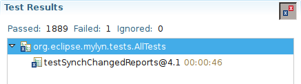
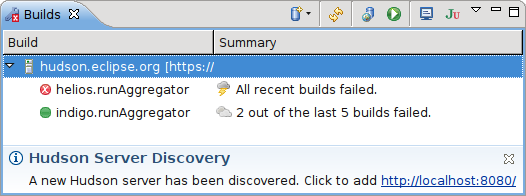
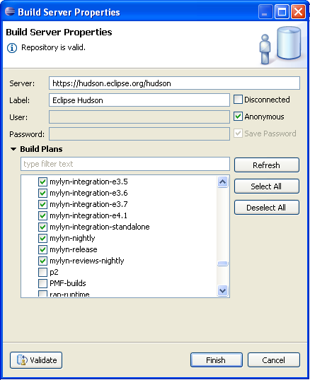

Task-Focused Interface: Merging of Contexts
Sam Davis contributed an enhancement that displays a prompt to merge or replace an existing context when copying a context between tasks.

Gerrit Connector (Incubation): Reviewers, Dependencies and Submit
The review editor shows the reviewers and their votes. The requirements section lists outstanding requirements.
If sections are collapsed a summary is displayed next to the section header. Dependencies are navigable through hyperlinks.

Patch sets can now be abandoned, restored, published and submitted.
On publish a dialog is displayed for voting and entering a comment.

Task-Focused Interface Improvements
Focused navigators display an affordance on hover that shows children of the clicked node. Pressing the plus icon is the equivalent of Alt+clicking. When navigating using Alt+click or the hover affordance revealed nodes now remain visible until a node is added to the context.
When a task is activated that does not have a context auto focusing is now disabled by default. The behavior for tasks that have a context is unchanged.

Bugzilla Connector: Boolean Charts
Bugzilla queries and task search can be specified using boolean charts that supported nested boolean expressions.
Labels in Scheduled Presentation
The scheduled presentation shows the week days instead of dates.
Active Task on Trim
A widget that is displayed on the window trim shows the active task. Tasks can be activated from the history using the arrow button.
The active task widget can be enabled in the Preferences under Tasks.

Hudson Connector (Incubation): Show Test Failures Only
The list of tests can be filtered to show failures only.

Gerrit Connector (Incubation): Preview
A first preview version of the Gerrit code review connector is now available on the weekly update site.

Gerrit repositories are configured in the same manner as task repositories.

Task List Integration
Reviews are added to the Task List through queries.

Reviews are tasks like any other: Reviews can be scheduled, activated and update notifications are managed in the Task List.
Review Editor
Review tasks open in a rich editor.

Review comments and the most recent patch set are displayed in the editor (required online access).

Review files open in the compare editor. Comments are indicated in a ruler and displayed when hovering over the marker.
Hudson Connector (Incubation): Automatic Server Discovery and Test Results
Torkild Ulvøy Resheim provided a great contribution that adds auto discovery for Hudson servers through ECF. When a server is dicovered a service message is displayed in the Builds view and the server can be configured with two clicks.

The build editor shows tests results in a tree that opens the corresponding Java file on double click.

Hudson Connector (Incubation): Build Editor and History
Builds can be opened in an editor that displays build details on a single page: Status, tests results, artifacts and code changes.
When History is selected in the popup menu of the Builds view all builds of a plan are shown in the History view. Builds are displayed in an editor when opened from the History.

Tasks can easily be created from builds. The description is automatically pre-populated with a list of changed files and failed tests.
Hudson Connector (Incubation): Test Integration and More Enhancements
The test results of the last build can be viewed by selecting Show Test Results from the popup menu in the Builds view. Tests can be rerun locally from the JUnit view.
The columns in the Builds view can be sorted by left-clicking on the column header. Columns can hidden by right clicking on the header. Column sizes are persisted now.
URLs are hyperlinked in the console.
Hudson Connector (Incubation): Enhancements
The output of the last build can be viewed by selecting Show Output from the popup menu in the Builds view. Java stack traces are hyperlinked.
If a build requires parameters a dialog is displayed when it is run. Many thanks to Eike Stepper for providing a contribution.

The tooltip in the Builds shows details about the plan and last build.

Popup notifications are displayed when the status of a build plan changes.

The Builds view now shows the time of the last build and the weather icon is now displayed in the summary column.
The presentation of the Builds view can be toggeled from the view menu and disabled plan can be fitered.
Notifications
The Commons component provides an extensible notification framework and a central preference page for configuring notifications.

Hudson Connector (Incubation)
The Hudson connector, developed by Markus Knittig as part of his Google Summer of Code project, shows the status of build jobs in a Builds view.
Build jobs can be selected for monitoring from the properties dialog.

Automatic refreshing of build status can be configured in the preferences.

The overall status of builds is displayed as a decoration when the Builds view is in fast view mode.
Team Repositories View
The Team Repositories view provides facilities for creating, managing and browsing team repositories such as build servers, task repositories, SCM repositores or review servers.
Create Team Repositories
The repository wizard provides a common entry point for creating team repositories.

Filter Matches are Highlighted in Search View
When task search results are filtered matches are highlighted to identify them more easily.

Trac: Mid-air collision detection support
If a Trac ticket has changed since it was last synchronized an error is displayed to avoid unintentional overwriting of changes. Please note that this requires a patched version of Trac's XML-RPC Plugin.
Trac: Decoration for Stories
Trac tickets with type 'story' are decorated as stories.

Bugzilla: Author Decoration for Attachments
The attachment table highlights attachments submitted by the logged in user.
Bugzilla: Custom Workflow Support
Bugzilla supports configuration of custom workflows.